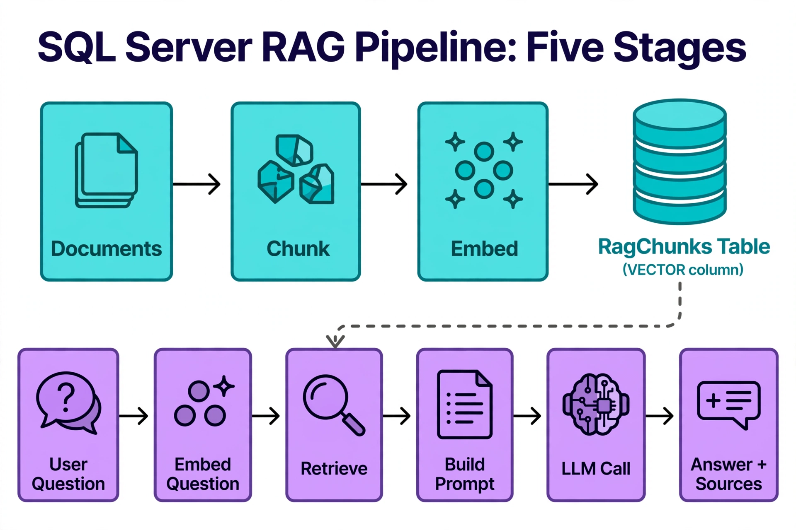

Chapter 24: Building a RAG Pipeline on SQL Server
Retrieval-augmented generation is the workload that made vector databases famous: instead of trusting a language model to recall facts from its training data, you retrieve the relevant documents from your own corpus and put them in the prompt. The model's job shrinks from "know everything" to "reason over this provided context" — hallucinations drop, answers become citable, and private data never needs to enter model training. When the corpus lives in SQL Server, the entire RAG pipeline — chunk storage, embedding ingestion, similarity retrieval, permission filtering, and prompt assembly — can run inside the database engine, with the LLM call as the only external step. This chapter builds that pipeline end to end.
---
Pipeline Architecture: Five Stages, One Database
A production RAG pipeline has five stages. Four of them belong in SQL Server; only the last one leaves it:
RagDocuments; a chunking process splits them into retrievable units in RagChunks (schema from Chapter 8, strategies from Chapter 22).VECTOR(1536) column — batched, with the staging-and-quarantine pattern from Chapter 8.
The top row (teal) is the write path: Documents → Chunk → Embed → the RagChunks Table with its VECTOR column. The bottom row (purple) is the read path: the User Question is embedded and Retrieve searches that same table (dashed arrow) — one database serves both directions. Retrieved chunks feed Build Prompt, the LLM Call stays external, and the user gets an Answer + Sources. The architecture's payoff: chunks, vectors, and metadata live in one transactional store, so citations are joins, not guesses.
Keeping stages 1–4 in SQL Server is not just convenience — it is correctness. Permission filtering inside the retrieval procedure means the LLM never sees chunks the user is not allowed to see; there is no post-generation filtering step to forget. Transactional ingestion means a document and its chunks are never half-present. And the audit trail — which chunks grounded which answer — is a query away.
---
The Retrieval Procedure: Similarity Plus Permission Filtering
The retrieval procedure is the load-bearing wall of the pipeline. It takes an embedded question and a user context, and returns ranked, permission-filtered chunks with their source metadata. Here is the production shape — DiskANN approximate search with over-fetch, joined back for enrichment and filtered by document permissions:
-- The heart of RAG: permission-filtered vector retrieval in one procedure
CREATE OR ALTER PROCEDURE dbo.usp_RetrieveChunks
@QuestionEmbedding VECTOR(1536),
@UserId INT,
@TopK INT = 8
AS
BEGIN
SET NOCOUNT ON;
-- 1. Approximate retrieval: over-fetch 5x to survive permission filtering
-- 2. Join back for document metadata + permission check
-- 3. Trim to TopK AFTER filtering (never before)
SELECT TOP (@TopK)
c.ChunkId, c.ChunkText, d.Title, d.SourceUri,
s.distance AS Distance
FROM VECTOR_SEARCH(
TABLE = dbo.RagChunks AS t,
COLUMN = Embedding,
SIMILAR_TO = @QuestionEmbedding,
METRIC = 'cosine',
TOP_N = @TopK * 5
) AS s
JOIN dbo.RagChunks AS c ON c.ChunkId = s.ChunkId
JOIN dbo.RagDocuments AS d ON d.DocumentId = c.DocumentId
WHERE d.IsPublished = 1
AND EXISTS (SELECT 1 FROM dbo.DocumentPermissions AS p
WHERE p.DocumentId = d.DocumentId
AND p.UserId = @UserId) -- row-level permission check
ORDER BY s.distance;
END;
GOThree details make this production-grade rather than demo-grade. Over-fetch before filtering: TOP_N = @TopK * 5 because permission and publication filters consume candidates — fetching exactly 8 and filtering to 3 is the classic RAG recall bug. Filter after retrieval, rank after filtering: the ORDER BY s.distance applies to the filtered set, so the final ranking reflects what the user may actually see. Permissions as data, not as application logic: the EXISTS check against a permissions table means access control is enforced by the same query that retrieves — auditable, testable, and impossible for a future application rewrite to bypass. (Row-level security from Chapter 12 can enforce this even more strongly.)
For corpora under ~50K vectors, replace the VECTOR_SEARCH call with exact VECTOR_DISTANCE ranking — same procedure shape, same filters, 100% recall, no index to maintain.
---
Hybrid Retrieval: Vector Plus Full-Text in One Query
Pure vector search misses exact-term matches ("error 0x80070005" is a string, not a concept), and pure full-text search misses paraphrases. Production RAG uses both. SQL Server composes them naturally — run the full-text predicate and the vector ranking in one statement and fuse the scores:
-- Hybrid retrieval: full-text candidates UNION vector candidates, fused
DECLARE @q VECTOR(1536) = '...';
DECLARE @keywords NVARCHAR(4000) = '"password reset" OR "account recovery"';
WITH VectorHits AS (
SELECT TOP (20) c.ChunkId, s.distance AS VecDist,
ROW_NUMBER() OVER (ORDER BY s.distance) AS VecRank
FROM VECTOR_SEARCH(TABLE = dbo.RagChunks AS t, COLUMN = Embedding,
SIMILAR_TO = @q, METRIC = 'cosine', TOP_N = 20) AS s
JOIN dbo.RagChunks AS c ON c.ChunkId = s.ChunkId
),
TextHits AS (
SELECT TOP (20) c.ChunkId,
ROW_NUMBER() OVER (ORDER BY k.RANK DESC) AS TextRank
FROM CONTAINSTABLE(dbo.RagChunks, ChunkText, @keywords) AS k
JOIN dbo.RagChunks AS c ON c.ChunkId = k.[KEY]
)
-- Reciprocal rank fusion: 1/(60+rank) per list, summed
SELECT TOP (10) c.ChunkId, c.ChunkText,
SUM(1.0 / (60 + COALESCE(v.VecRank, 1000))
+ 1.0 / (60 + COALESCE(t.TextRank, 1000))) AS RRFScore
FROM dbo.RagChunks AS c
LEFT JOIN VectorHits AS v ON v.ChunkId = c.ChunkId
LEFT JOIN TextHits AS t ON t.ChunkId = c.ChunkId
WHERE v.ChunkId IS NOT NULL OR t.ChunkId IS NOT NULL
GROUP BY c.ChunkId, c.ChunkText
ORDER BY RRFScore DESC;Reciprocal rank fusion (RRF) needs no score normalization between the two lists — it works purely on ranks, which is why it is the standard fusion method. The constant 60 dampens the influence of very high ranks; the COALESCE(..., 1000) gives chunks appearing in only one list a small participation score rather than zero. This is Chapter 11's hybrid search applied to the RAG retrieval path.
---
Prompt Assembly and the Generation Call
With chunks retrieved, prompt assembly is string formatting with a budget: the model's context window. Number each chunk, include its source, and instruct the model to cite chunk numbers — citations are what make RAG answers trustworthy and debuggable:
-- Assemble a cited prompt from retrieved chunks (application or T-SQL)
-- Prompt template:
-- "Answer the question using ONLY the context below. Cite sources like [1], [2].
-- If the context does not contain the answer, say so explicitly.
--
-- Context:
-- [1] (Password reset procedure — https://intranet/help/password-reset)
-- To reset your password, open Settings > Security > ...
-- [2] (Account recovery FAQ — https://intranet/help/account-faq)
-- If you are locked out, contact the service desk at ...
--
-- Question: How do I reset my password?"The generation call itself goes to the LLM — Azure OpenAI via sp_invoke_external_rest_endpoint for in-database orchestration, or from application code for production scale. Either way, log the answer alongside the chunk IDs that grounded it: that log is your evaluation dataset (Chapter 27), your audit trail, and your debugging lifeline when a user reports a wrong answer. "Which chunks did the model see?" should always be a query away, never a mystery.
---
Keeping the Pipeline Honest: Freshness and Evaluation Hooks
A RAG pipeline rots in two ways: stale content and degrading retrieval quality. Build the countermeasures into the pipeline rather than bolting them on later. For freshness, the DocHash change detection from Chapter 8 drives incremental re-chunking, and the embedding backlog query tells you whether ingestion is keeping up. For quality, the recall history table from Chapter 14 trends retrieval health, and the answer log feeds the evaluation metrics in Chapter 27.
One more practice that pays for itself: a golden question set — twenty to fifty representative questions with known-good answers, run through the full pipeline on a schedule, with answer quality scored (by an LLM judge or by human spot-check). It is the end-to-end test of the entire system: chunking, embeddings, index, retrieval procedure, prompt template, and model. When the golden set degrades, you know something changed; the per-stage metrics tell you where.
---
Key Takeaways
VECTOR_SEARCH (TOP_N = @TopK * 5), joins back for metadata, applies publication and permission filters, then trims to @TopK — filtering before trimming is what keeps recall intact.VECTOR_SEARCH with CONTAINSTABLE full-text results fused by reciprocal rank fusion — no score normalization needed, and exact-term matches stop falling through the cracks.QueryOptimizer — Self-Hosted SQL Performance Workbench
EXPLAIN visualizer · Index advisor · Slow query dashboard · SQL Server
Test yourself on this chapter
5 questions · instant scoring · explanations included